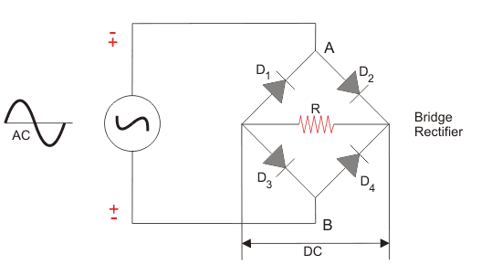
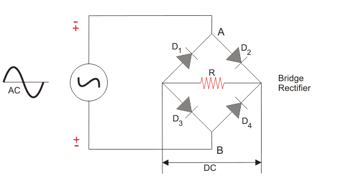
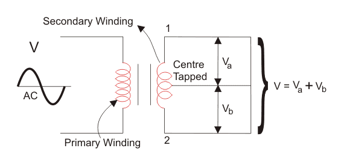
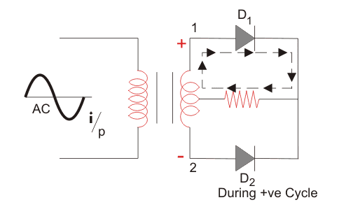
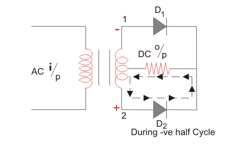
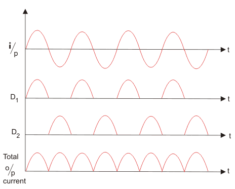

Single Phase Full Wave Rectifier
Aim
To study the input and output current and voltage waveforms of a single phase full wave rectifier.
Theory
When we use a half-wave rectifier, a significant amount of power gets wasted as the only one half of each cycle passes through and the other the cycle gets blocked. Moreover, the half-wave rectifier is not efficient (40.6%) and we can not use it for applications which need a smooth and steady DC output. For more efficient and steady DC, we use a full wave rectifier. A full wave rectifier converts both halves of each cycle of an alternating wave (AC signal) into pulsating DC signal. We can further classify full wave rectifiers into
- Centre-tapped Full Wave Rectifier
- Full Wave Bridge Rectifier
 

Construction of Centre-tapped Full Wave Rectifier
A centre-tapped full wave rectifier system consists of:
- Centre-tapped Transformer
- Two Diodes
- Resistive Load
Centre-tapped Transformer: – It is a normal transformer with one slight modification. It has an additional wire connected to the exact centre of the secondary winding. This type of construction divides the AC voltage into two equal and opposite voltages namely +Ve voltage (Va) and -Ve voltage (Vb). The total output voltage is: V=Va+Vb
Working
We apply an AC voltage to the input transformer. During the positive half-cycle of the AC voltage, terminal 1 will be positive, centre-tap will be at zero potential and terminal 2 will be negative potential. This will lead to forward bias in diode D1 and cause current to flow through it. During this time, diode D2 is in reverse bias and will block current through it.
During the negative half-cycle of the input AC voltage, terminal 2 will become positive with relative to terminal 2 and centre-tap. This will lead to forward bias in diode D2 and cause current to flow through it. During this time, diode D1 is in reverse bias and will block current through it.
During the positive cycle, diode D1 conducts and during negative cycle diode D2 conducts and during positive cycle. As a result, both half-cycles are allowed to pass through. The average output DC voltage here is almost twice of the DC output voltage of a half-wave rectifier.
Advantages of full wave rectifiers
- Full wave rectifiers have higher rectifying efficiency than half-wave rectifiers. This means that they convert AC to DC more efficiently.
- They have low power loss because no voltage signal is wasted in the rectification process.
- The output voltage of centre-tapped full wave rectifier has lower ripples than a halfwave rectifiers.
Disadvantages of full wave rectifier
- The centre-tapped rectifier is more expensive than half-wave rectifier and tends to occupy a lot of space.
Procedure
- Select the Full Wave Rectifier experiment from the experiments list.
- Go to the simulator.
- Observe the circuit diagram. It consists of AC supply(Vab), a Center tapped transformer Transformer to change the level of voltage,2 diodes(D1 and D2) and Resistive load.
- Diodes D1 and D2 are connected at the opposite ends of the transformer.
- The Center tapped is generally considered at the ground point or the zero reference voltage point.
- Now click on the simulate button.
- On clicking the button you can observe that when we apply an ac input to the primary side of the transformer, this input makes the secondary ends S1 and S2 become positive and negative alternatively.
- For the positive half of the ac signal, the secondary terminals i.e. S1 is positive, ground point will have 0V and S2 will be negative.
- At this instance, diode D1 will be forward biased and D2 will be reverse biased.
- Hence D1 will conduct and D2 won’t conduct.
- Thus the current flow will be from a to b, hence the positive half cycle appears across the load resistance R.
- During the negative half cycle, the secondary terminals i.e. S1 becomes negative, ground point will have 0V and S2 will be positive.
- Thus the diode D2 will be forward biased and D1 will be reverse biased.
- Hence D2 will conduct and D1 won’t conduct.
- Thus the current flow will be from a to b(as shown in simulation) and the voltage drop appears across the load resistance R.
- On comparing the current flow in the positive and negative half cycle we can conclude that the direction of the current flow is the same i.e through load resistance R.